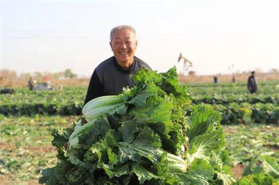

品牌初心
我们的故事
从一片农田到一个品牌，我们始终坚守初心，只为给消费者带来最优质的大白菜。
一颗大白菜的品质追求
2015年，创始人张建国先生在一次农村调研中发现，市场上的大白菜虽然产量高，但口感和安全性却难以保证。许多农民为了追求产量，过度使用化肥农药，导致大白菜失去了原有的风味。
作为一个从小在农村长大的人，张建国先生对大白菜有着深厚的感情。他决心要种出一种真正安全、美味的大白菜，让城市里的人们也能吃到小时候的味道。于是，"绿田源"品牌应运而生。
我们花了三年时间，走遍了全国十几个省份，最终在北纬40°找到了最适合大白菜生长的土壤和气候。又经过两年的品种筛选和种植试验，终于培育出了"绿田源"系列大白菜品种。
8
年品牌历史
500+
合作农户
10000+
日均销量(kg)
30+
覆盖城市

品牌发展历程
2015年
品牌创始人张建国先生开始调研大白菜市场，发现品质问题严重，决定创立一个专注于高品质大白菜的品牌。
2016-2017年
走遍全国十几个省份，最终在北纬40°选定种植基地，并开始品种筛选和种植试验。
2018年
"绿田源"系列大白菜品种培育成功，首批有机大白菜上市，获得消费者一致好评。
2019-2020年
建立全国冷链物流网络，入驻各大商超和电商平台，品牌知名度迅速提升。
2021-2023年
荣获"中国有机农业十大品牌"称号，种植基地扩大至5000亩，年销量突破3000吨。